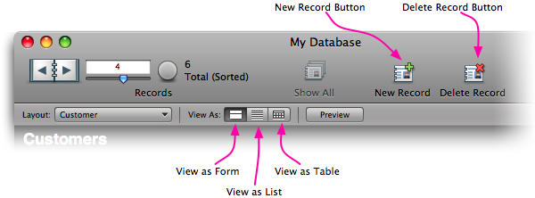
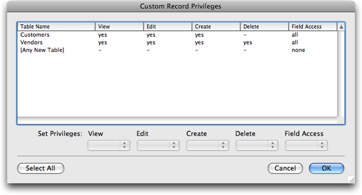
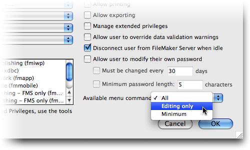
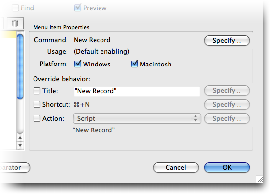

This post is archived from Six Fried Rice, a company and blog I used to run. Some posts have been edited slightly to fix typographical errors, and remove unnecessarily-gendered language. You can view the full archive here.
FileMaker 10’s most visible new feature is the completely redesigned Status toolbar (formerly called the Status area). Perhaps because of its prominent position, or because it is such a striking departure from a 20-year FileMaker mainstay, this change has been met with its fair share of controversy. In this article we’ll show you why you don’t need to worry, and how you can make the new Status toolbar work for you.
In FileMaker 10, the standard Status toolbar looks something like this:

The new Status Toolbar is quite a departure from the FileMaker you know and love.
If you leave the Status toolbar open, your user will see prominent New Record and Delete Record buttons (among others). At first this might seem nuts. After all, many of you have special buttons on your layouts specifically for record creation and deletion, and you certainly don’t want people willy-nilly switching layouts to the wrong view, confusing themselves in the process. But it turns out you have more control over these buttons than most people realize. You cannot add your own buttons or custom icons, but you can:
Disable buttons you don’t want your users to click
Reconnect most buttons to scripts of your own
Rename buttons to better reflect the terminology in your database
Disabling Buttons
There are three ways to disable buttons in the Status toolbar (not all apply to all buttons). You can set up custom record privileges to control who can create and delete records. You can restrict access to menu commands using a privilege set; and finally, you can use custom menus to remove troublesome menu commands. Which you use is a matter of your security and user interface needs.
Custom Record Privileges
Using custom record privileges you can remove the ability for a user to create or delete records for any particular table. When you do, the associated status toolbar button will disable as appropriate. This even works for so called “record level access” privileges. For instance, you can remove the ability to delete a record only once its Status field has been set to “shipped.” When you do, the Delete Record button will disable when you view shipped records.
Setting this up is easy:
In your database, choose File → Manage → Accounts and Privileges.
The Accounts & Privileges dialog box appears.
Open one of your existing privilege sets, or create a new privilege set.
You’ll probably need to switch to the Privilege Sets tab. If you’re doing this for the first time, it is probably easiest if you duplicate the [Data Entry Only] privilege set so you start off with some reasonable privileges.
From the Records pop-up menu, make a reasonable choice.
For example, if you want to remove the ability to delete records of any kind, choose “Create and edit in all tables.” For the ultimate in control, choose “Custom privileges.” This window shows a privilege set configured so users can create records in any table, but can only delete Vendor records.

Once you assign an account to this privilege set, when that user logs in, they’ll see the Delete Record button disabled when they look at Customer records:
The Delete Record toolbar button is only available if the user is allowed to delete the record.
Restricted Menu Access
The record privileges don’t effect the other toolbar buttons (since they have nothing to do with creating or deleting records). Also, for databases where security isn’t terribly important, and preventing casual or accidental unwanted actions is all you need, restricting record privileges can be heavy handed and hard to script around.
For cases like this, the easiest solution is to restrict menu access. If you revisit the Privilege Sets tab of the Manage → Account & Privileges dialog box, you’ll discover that you can make gross restrictions to the menu commands your users get:

The easiest way to disable toolbar buttons is to disable the menu commands they’re associated with.
If you switch to Editing Only or Minimal, FileMaker takes away all the powerful commands (like Import and Export, New Record, Delete Record, Find, and so forth). All the associated Status toolbar buttons will disable as well.
Custom Menus
For the utmost in control, you can turn to Custom Menus. This power feature is only available in FileMaker Pro Advanced, and gives you almost complete control of the menus, sub-menus, and commands your users see when they use your database. You’ll see some step-by-step instructions for using custom menus at the end of this article. For now, it will suffice to say that if you remove a menu command from a menu set, then when that menu set is active, the associated button in the Status toolbar will be disabled. In this way you can selectively disable any button you choose.
Renaming and Redefining Buttons
Disabling buttons is all well and good, if you’re a fan of taunting your users with permanently-out-of-reach temptation [ed: who isn’t?!]. But why not take it a step further. Embrace those buttons and make them do your dirty work. Taking control of the toolbar buttons requires use of custom menus (and, by extension, FileMaker Pro Advanced).
Imagine you have a database of customers and vendors. Your business rules require that you carefully control the process of creating and deleting records. For instance, you may need to set up web site access for any new customers, which requires running your fancy SQL scripts. Here’s how to express your authority and keep the Status toolbar buttons:
From the File Menu, choose Manage → Custom Menus.
The (quite complex) Manage Custom Menus dialog box appears. This is grand central station for every menu command FileMaker can muster.
In the Custom Menus tab, select the Records Copy menu.
FileMaker ships with a customizable copy of all the standard menus to make it easy to squeeze small changes into otherwise-normal menus. This is the copy of the usual Records menu, where the New Record and Delete Record commands live.
With the menu selected, click Edit.
The Edit Custom Menu dialog box appears. On the left side, you see all the menu items in this menu.
Select the New Record menu item.
When you select a menu item, the right side of the dialog box fills in with options for the item. There’s lots of power here, so feel free to explore. You can see the options in the figure below.

With Custom Menus you can, among other things, rename FileMaker’s standard menu items and assign them to your own scripts.
Look next to “Command” and make sure it says “New Record.”
This is the key to this entire technique. This menu item is associated with the New Record command, which is a core command in FileMaker. When you adjust the behavior of the menu item associated with the New Record command, you also modify the behavior of the New Record toolbar button.
Turn on the Action checkbox and select the script you use to create new records.
When you add an action to the menu item, you get to pick either a single step or a script. In most cases you’re best off using a script (even if it is a one-liner) because it makes it easy to change later, even if several different menu sets include items that do the same thing.
If you want, turn on the Title checkbox, click its associated Specify button, and enter a calculation to determine the menu title.
For instance, you might decide you want your menu called “New Customer,” “Create Record,” or Pi * Random. Ok, probably not the last one, but the point is, you can use all the power of calculations to generate a dynamic and interesting title for your menu. Anything you do here will also influence the label under the New Record button in the Status toolbar.
Select the Delete Record menu item and configure as you wish.
Just make sure you keep Command set to “Delete Record…” so FileMaker knows you’re adjusting behavior for the delete action.
Click OK to close the Edit Custom Menu dialog box.
You’re now back in the Manage Custom Menus dialog box.
From the “Default menu set for this file” pop-up menu, choose “Custom Menu Set 1.”
When you make this change, you’re telling FileMaker you want the customized menu set to be used automatically for this database. You can also configure custom menu sets on a per-layout basis (See the Layouts → Layout Setup dialog box in Layout Mode) or switch menu sets via scripts (using the Install Menu Set script step).
Click OK once more to close this dialog box.
Now you’re ready to test your changes. If all went well, the New Record and Delete Record buttons in the Status toolbar now bend to your will.
Dealing With the View As Buttons
The steps above show you how to attach your own actions to the New Record and Delete Record toolbar buttons. But at the outset, we also mentioned the potential confusion your users might get by accidentally clicking the View As toolbar buttons. Once again, you have two options here.
To disable any of these buttons you can disable a particular view on a per-layout basis. For instance, your Customer List layout only makes sense in List view, so turn off Form and Table views. This is super easy. In Layout mode, choose Layouts → Layout Setup, switch to the Views tab, and uncheck the views you don’t want your users to use. When you do, the associated buttons in the Status toolbar will be disabled.
To get these buttons to run your own script, just override the View as Form, View as List, and View as Table commands using custom menus, as described above. You’ll find them in the View Copy menu if you use the built in custom menu set.
To Infinity and Beyond
Combining the various custom menu techniques, plus some clever naming conventions and scripts, you can get the Status toolbar really working for you. In this video demo, you can see a simple database that customizes the behavior of several toolbar buttons so this standard FileMaker user interface integrates seamlessly with your carefully controlled database.
This sample database (available for download here) combines several techniques to fully incorporate the Status Toolbar into a highly customized database experience.
In this example (which is anything but fully baked) we use the Get(LayoutName) function and some custom scripting to get the “View as Form” and “View as List” buttons to switch to appropriate layouts. We’ve also added a custom script to the New Record and Delete Record buttons, and renamed them so it is more obvious what they will do.
This kind of integration has several powerful advantages:
FileMaker takes care of a lot of nice user interface work that we would otherwise have to create (and duplicate on every layout) ourselves. That means less time fiddling and more time making databases meet the needs of our customers.
This database has more powerful interface elements than it would if we had to handle the UI ourselves. For instance, our end users can show and hide the toolbar at will, and customize it to their needs.
If we build multiple databases for the same customer, they all work the same way. If a user customizes the toolbar in one database, their changes will apply in all of them. They only have to learn one set of interactions. This means we get more consistency with less work.
A lot of people have expressed frustration about the new Status area, complaining that FileMaker has taken away control they need. I hope this article makes it clear that we have more control than ever before.